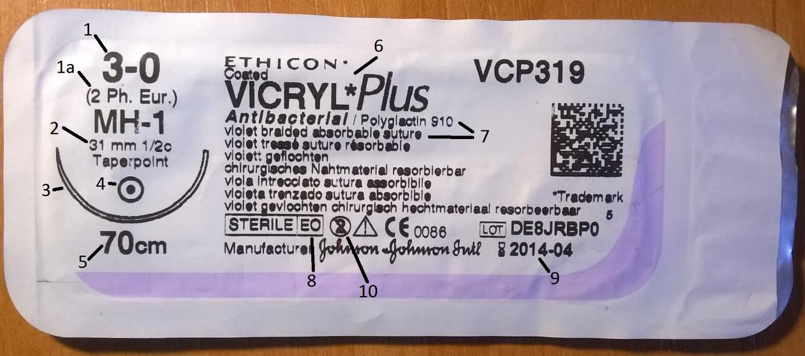

Nici chirurgiczne
Na skróty

- Grubość nici w skali USP. Im większa cyfra przed zerem, tym mniejsza nić!
- Grubość w skali europejskiej. Cyfra oznacza ilość dziesiętnych części milimetra. Tutaj średnica wynosi 0,2 mm
- Długość bezwzględna igły oraz wycinek koła którego ma kształt. Tutaj ½ circle – pół koła
- Rozmiar igły w skali 1:1.
- Symbol przekroju igły. Tutaj: kółko – igła kłująca. Symbol trójkąta oznacza tzw. Igłę tnącą.
- Długość nici
- Nazwa nici
- Materiał, kolor i sposób wykonania Tutaj: Polyglactin 910 (vicryl), fioletowa, pleciona, wchłanialna.
- Symbol użytego środka sterylizującego Tutaj: EO – tlenek etylenu
- Data przydatności do użycia
- Symbol oznaczający sprzęt jednorazowego użytku
Obecność opisu igły wskazuje na zestaw do szwów atraumatycznych, czyli igły fabrycznie wtopionej w nić. Zestaw taki nie wymaga nawlekania igły oraz zmniejsza uszkodzenie tkanek.
Łyk historii
Pierwsze doniesienia o szwach chirurgicznych sięgają 3000 r. P.n.e. ze starożytnego Egiptu.
Nici wykonywano z materiałów roślinnych (len, konopia, bawełna) oraz zwierzęcych, takich jak włosy, ścięgna czy tętnice. W II w n.e. rzymski lekarz Galen opisał nici zrobione ze zwierzęczych jelit. Istnieją one do dziś pod nazwą Catgut (ang. Cattle – bydło, Gut – Jelito). Są wykonywane z jelit owiec lub kóz. (W procesie produkcyjnym nie ucierpiał żaden kot.)
Dopiero w latach 1860-80 Ojciec Antyseptyki, Joseph Lister pracował nad nićmi jedwabymi a następnie typu Catgut zanurzanymi w wodnym roztworze fenolu, co pozwoliło na uniknięcie tak częstego wówczas ropienia szwów.[1]
Nici chirurgiczne
Nici chirurgiczne dzielą się, w zależności od właściwości na dwie główne kategorie:
- Wchłanialne – Stopniowo ulegają rozkładowi w tkankach, ale zdecydowanie szybciej tracą wytrzymałość. Z założenia używane do szwów głębokich, błon śluzowych oraz szwów śródskórnych. Czasami używa się ich do skóry, szczególnie w chirurgii dziecięcej, aczkolwiek szwy wchłanialne powodują trochę większy odczyn tkankowy niż niewchłanialne, co może mieć negatywny wpływ na estetykę blizny. Szwami wchłanialnymi długo utrzymującymi napięcie można również szyć ścięgna.
- Naturalne
- Catgut -są to nici wytwarzane z bydlęcych jelit. Wycofywane z użytku ze względu na trudny do przewidzenia czas wchłaniania, dość silny odczyn zapalny, oraz możliwość przeniesienia chorób prionowych. Czas wchłaniania wynosi około 60-70 dni
- Catgut chromowany - odmiana nici Catgut. Poddawane są działaniu roztworu soli chromu, co uodparnia je na degradację i pozwala osiągnąć dłuższy oraz bardziej przewidywalny czas wchłaniania. (60-90 dni) Nici te są mocniejsze i wywołują mniejszy odczyn tkankowy niż „Plain Catgut”
- Z tworzyw sztucznych – wywołują mały odczyn zapalny:
- Vicryl – poliglaktyna 910
- Dexon – kwas poliglikolowy
- PDS – polidwuoksanon
- Polysorb – lactomer
- Caprosyn – polimerowy
- Biosyn – poliestrowe
- Monocryl – polyglecaprone 25
-
Niewchłanialne – z założenia używane do szycia skóry, lecz wykorzystywane także w przypadkach, gdy potrzebne jest długotrwałe
i stałe napięcie w tkankach głębszych. Nowoczesne materiały szewne powodują znikomą reakcję tkankową,
więc w niektórych przypadkach można je pozostawić w ciele.
- Metalowe – najczęściej ze stali nierdzewnej, używane do zamknięcia mostka po sternotomii pośrodkowej, w ortopedii, do operacji przepuklin oraz skóry[4]
- Naturalne:
- jedwab
- len
- Z tworzyw sztucznych:
- poliamid (nylon)
- polipropylen (prolen)
- politetrafluoroetylen (PTfE)
- polybutester
- poliestry
|
Podtrzymywanie tkanek [dni] |
Całkowite wchłonięcie [dni] |
|
|
Plain gut |
7-10 |
70 |
|
Vicryl rapide |
10-14 |
42 |
|
Caprosyn |
10 |
<56 |
|
Chromie gut |
2 |
90 |
|
Coated vicryl |
3 |
90-120 |
|
Monocryl |
3 |
90-120 |
|
Polysorb |
3 |
56-70 |
|
Dexon II, S |
3 |
60-90 |
|
Biosyn |
3 |
60-90 |
|
PDS II |
50% - 28 dni 0% - 90 dni |
180-210 |
|
Maxon |
42 |
180 |
Grubość nici
W zależności od potrzeb, stosuje się nici o różnych grubościach. Najczęściej używana jest amerykańska skala USP (United States Pharmacopoeia) umieszczana na opakowaniu. Średnicę należy dopasować do tkanki oraz napięcia brzegów po zbliżeniu. Należy wziąć pod uwagę szybszą utratę wytrzymałości nici wchłanialnych i wybrać nieco grubszą nić.
Im większa cyfra przed zerem, tym mniejsza nić!
Wskazania materiałów szewnych w zależności od lokalizacji[5]
- Rany błony śluzowej (jama ustna, język, genitalia)
- Nici wchłanialne 3-0, 4-0
- Skóra głowy, tors, kończyny
- Powierzchniowe – nici niewchłanialne 4-0, 5-0
- Głębokie – nici wchłanialne 3-0, 4-0
- Twarz, łuki brwiowe, nos, wargi
- Powierzchniowe – niewchłanialne 6-0
- Głębokie –wchłanialne 5-0
- Ucho, powieka oka
- Powierzchniowe – niewchłanialne 6-0
- Dłoń
- Powierzchniowe – niewchłanialne 5-0
- Głębokie – wchłanialne 5-0
- Stopa, podeszwa
- Powierzchniowe – niewchłanialne 3-0, 4-0
- Głębokie – wchłanialne 4-0
- Prącie
- Powierzchniowe – niewchłanialne 5-0, 6-0
USP
Średnica [mm]
8-0
0,04 – 0,049
7-0
0,05 – 0,069
6-0
0,07 – 0,099
5-0
0,10 – 0,14
4-0
0,15 – 0,19
3-0
0,20 – 0,24
2-0
0,25 – 0,29
0
0,30 – 0,39
1
0,40 – 0,49
2
0,50 – 0,59
Budowa wewnętrzna
Ze względu na strukturę, materiały szewne dzielimy na:
- Monofilament – Najczęściej wytwarzane poprzez wytłaczanie plastiku pod dużym ciśnieniem. Najczęściej są to nici cieńsze, ponieważ grube nici monofilamentarne są bardziej sztywne, mniej poręczne i mogą na przykład powodować trudności w zakładaniu węzłów. Nici te są gładkie, przez co bardzo łatwo przechodzą przez tkankę. Zalecane do szycia w środowisku zakażonym, ponieważ nie posiadają światła.
- Wielowłóknowe (multifilament) – Są złożone z wielu odrębnych nici splecionych ze sobą . Są niezalecane do szycia narządów posiadających światło, oraz miejsc zakażonych, za sprawą sił kapilarnych pomiędzy włóknami. Kapilarność umożliwia przedostawanie się płynu wzdłuż nici, co w przypadku obecności bakterii, powoduje ich wprowadzenie do okolicznych tkanek. Nici wielowłóknowe posiadają szorstką strukturę która utrudnia przejście przez tkanki, ale jednocześnie stabilizuje umocowanie węzła. Nici te są bardziej giętkie od monofilamentarycznych.
- Skręcone (twisted) – Skręcone spiralnie wokół siebie, z reguły prawoskrętnie. Zauważalne są różnice w średnicy w obrębie tej samej nici. (Na przykład są to nici jedwabne)
- Splecione (braided) – Splecione na kształt warkocza. Mają nieco mniejsze właściwości kapilarne niż nici skręcone.
Nici wielowłóknowe są często powlekane (coated). Pozwalala to na wygładzenie nierównej powierzchni i obniżenie traumatyzacji przy przechodzeniu przez tkanki. Dodatkowo, powłoka obniża właściwości kapilarne nici. Powłoka może spełniać też funkcję antybakteryjną jak w przypadku nici Vicryl Plus. Są one powleczone antybakteryjnym triclosanem.